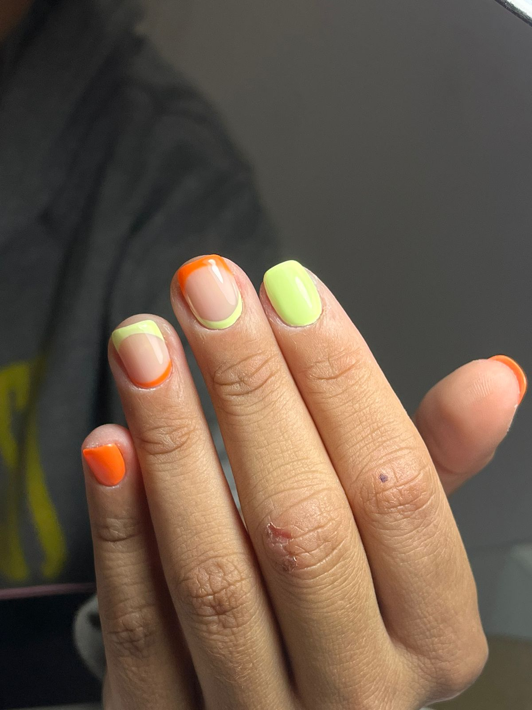
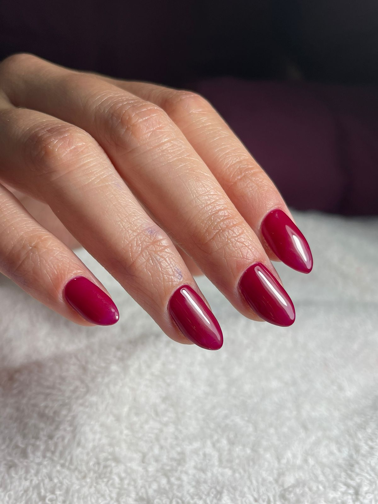
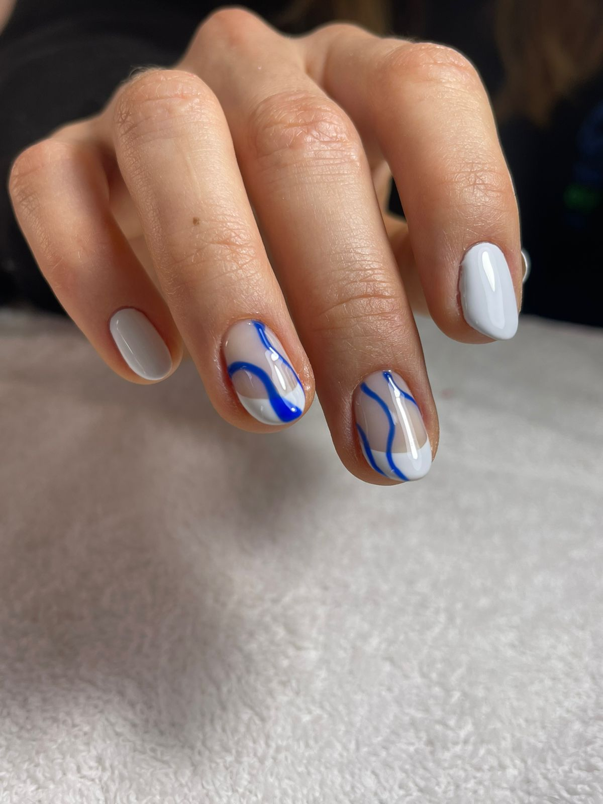
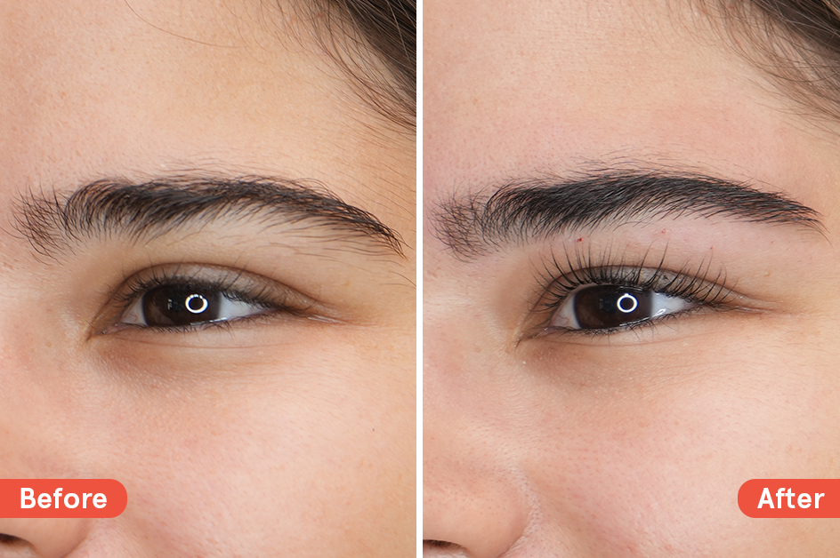

Aprende con nosotros
En nuestra academia, perseguimos la excelencia con el propósito de formar profesionales comprometidos
con
la satisfacción de sus clientes y distinguidos por la alta calidad de sus trabajos. Este compromiso
se
refleja no solo en los resultados finales, sino también en cada etapa del proceso.
Nuestra visión va más allá de la mera formación profesional; nos esforzamos por desarrollar
individuos
íntegros y éticos, con el objetivo de ofrecer a nuestros clientes una experiencia cálida y de
calidad.
En este sentido, nos enorgullece destacar que nuestro enfoque educativo no solo se centra en la
adquisición de habilidades técnicas, sino también en la formación de profesionales con valores
sólidos.
Los cursos que ofrecemos incluyen:
Manicuria:
Kapping
Consiste en aplicar una fina capa de acrílico o gel fortificador sobre la uña que actúa como una barrera protectora. A diferencia de las uñas esculpidas, este baño en gel kapping no alarga la uña natural sino que acompaña el crecimiento de la misma y dura hasta unos 20 días.
Esculpidas
Las uñas esculpidas son extensiones que se construyen a partir de la uña natural con material acrílico o gel. Estas permiten restaurar y reconstruir uñas mordidas o simplemente, lucir uñas más largas. Algo que las hace sumamente atractivas, ya que se puede moldear la forma y longitud para obtener varios estilos.
Esmaltado semipermanente
Es un esmaltado de secado inmediato y de larga duración que mantiene un resultado reluciente. Este efecto se consigue con la aplicación de esmaltes específicos y el secado de las uñas en una luz UV o LED.
Esmaltado tradicional
El esmalte de uñas tradicional se pinta sobre la placa de las uñas, normalmente en varias capas, y luego se seca al aire. El esmalte de uñas convencional es un polímero disuelto en un disolvente. Durante el proceso de secado, el disolvente se evapora, y el polímero se endurece.
Pestañas
Lifting
Consiste en el levantamiento de pestañas que ayuda a agrandar el efecto de tu mirada. Para así, lograr unas pestañas con más longitud y espesor. En sí, es un tratamiento específico para levantar tus pestañas y brindarles una dirección y separación únicas para que luzcan más naturales.

Cejas
Perfilado
crea armonía facial, contrastando los rasgos más destacados del rostro y abriendo la mirada. Se trata de una técnica que precisa la forma de esta zona, respetando la funcionalidad de las cejas, que es resguardar los ojos del polvo, la radiación solar, el sudor y otras agresiones ambientales.
En nuestra institución, estamos comprometidos con el éxito y desarrollo integral de cada estudiante, proporcionándoles las herramientas y conocimientos necesarios para destacarse en su campo y contribuir positivamente a la sociedad.